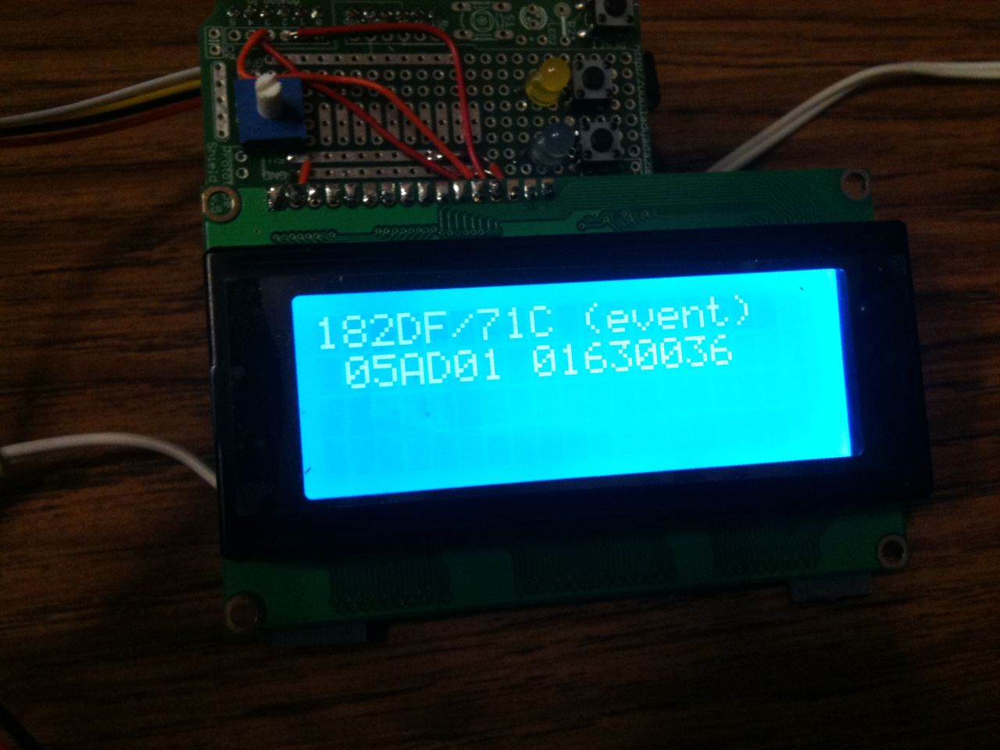
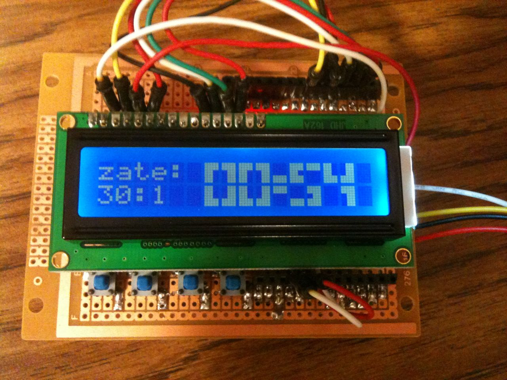

Show that initialization of multiple nodes doesn't require anything. Add the 3rd node “out of box”, show that it starts up and can be easily configured.
The OpenLCB group did a day's worth of demonstrations of OpenLCB at the NMRA 2010 convention in Milwaukee.
There are some YouTube videos available:
The demo setup.
Basic module configuration (no computer involved)
More advanced configuration (still no computer involved)


In addition to producer/consumer modules doing all the usual things over CAN and Ethernet, we also showed:
A display module that showed events of interest

A fast clock that was emitting events that could drive
consumer actions, plus a display on another node

JMRI support, including operation and configuration, with the computer connected either through a standard USB adapter or via an Ethernet connection (though we didn't leave the computer connected because we wanted people to understand that OpenLCB doesn't require a computer)
Prototype code for these is available.
Show
that initialization of multiple nodes doesn't require anything. Add
the 3rd node “out of box”, show that it starts up and
can be easily configured.


Add a computer via USB connection and show that everything still works. Demonstrate computer responding to hardware events, and hardware responding to computer events. Plan to do this demonstration second, as the first example doesn't need a computer in any way.

Demo Ethernet connection by adding a computer via ethernet-CAN adapter; show that's also plug-and-play.
Diagram shows two computers because the Ethernet connection is added to Demo 3 without reconfiguring anything.

Two CAN segment communicating over Ethernet without a PC doing any intervention, e.g. for a modular layout setup. Want to script the demo to make it clear that we're combining independent systems, which can still interoperate. That might need two nodes on each CAN segment, to show they don't have to be reprogrammed.
Site hosted by